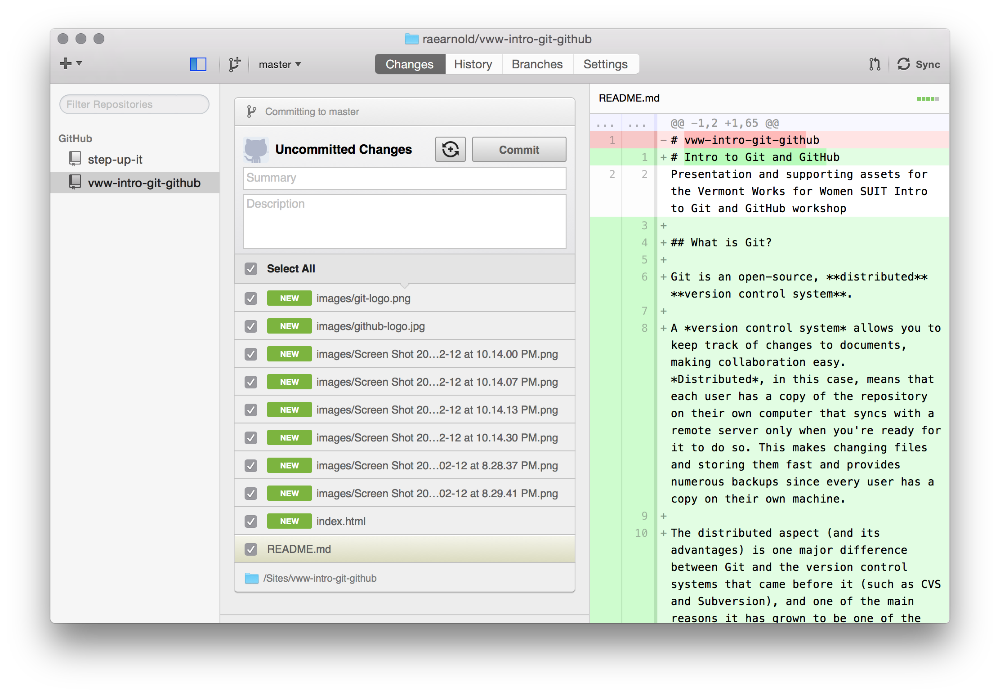
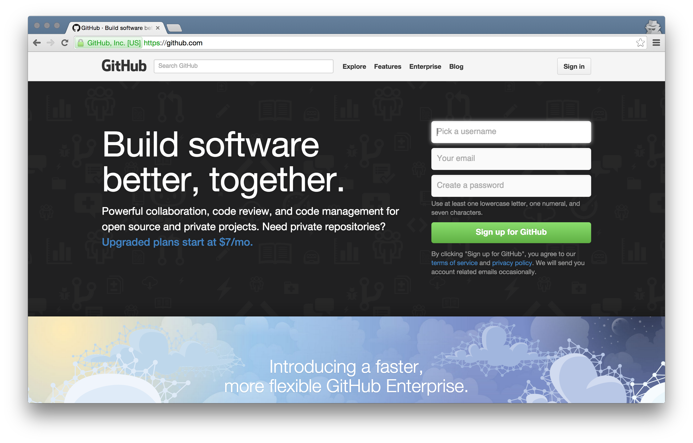
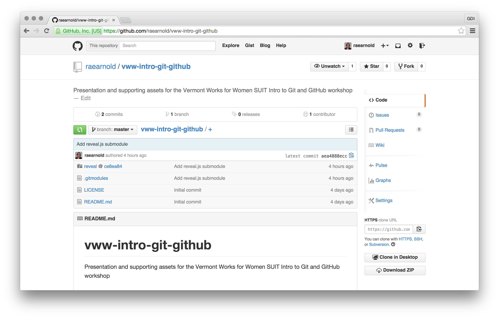

Intro to Git and GitHub
Version Control and Collaboration for Any Project
Rachael Arnold • @raevenfea • rae.arnold@gmail.com
Vermont Works for Women • Step Up to IT
What is  ?
?
Git is an open-source, distributed version control system. It:
- tracks changes to documents
- makes collaboration easy
- keeps copies on every users's computer
- makes recovering previous changes possible
- and more…
Interacting with Git
Command Line Interface (CLI)

Interacting with Git
Graphical User Interface (GUI)
What is ?
GitHub is a web-based host for Git repositories and:
- allows users to collaborate
- makes open-source code changes simple
- has a built-in bug tracker
- hosts simple websites from your repositories
- and much, much more…
Interacting with GitHub
Browser (GitHub.com)
Interacting with GitHub
Browser (view of a project page)
Keeping it all straight:
We're using GitHub’s GUI for Git in this workshop.
A bit confusing, right? If it helps:
Things in the desktop application:
Git
(all about version control)
Things in browser:
GitHub
(collaborating with the outside world)
Lab Time
- Fix one typo in this presentation and submit a pull request
- Create your own repository with a README.md and push to GitHub
- Find something interesting, fork it, check out your fork locally
and